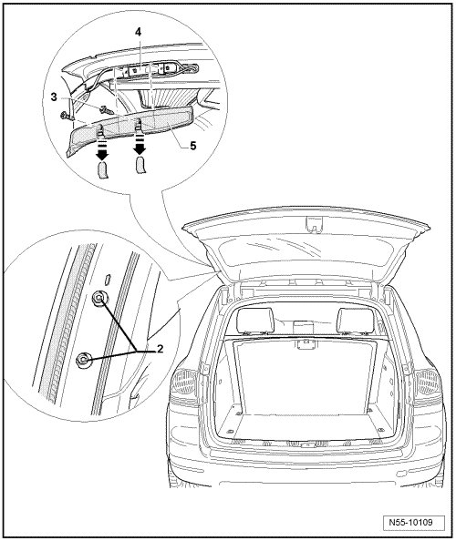

Rear Lid
Rear Lid
Removing

- Open the rear lid hinged window.
- Open the rear lid.
• Make sure the rear lid hinged window does not fall into the lock. Otherwise the rear lid cannot be removed by itself.
- Remove the rear lid trim panel and the window frame.
- Pull down cover caps - arrows - and unscrew bolts - 3 - from trim - 5 - and remove trim from lid hinge - 4 -.
- Harness connectors must be disconnected from installed electrical components and hoses.
- Loosen bolts - 2 - (do not unscrew completely).
- A second mechanic is required for the rest of the removal procedure.
- Only now remove the screws - 2 - and remove the rear lid - 1 -.
Installation
To install, perform the steps used for removal in reverse order.
- Adjust the rear lid. Refer to --> [ Rear Lid, Adjusting ] Rear Lid, Adjusting